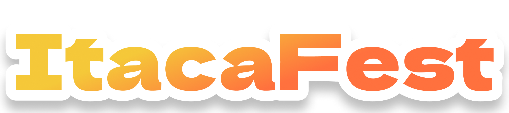

I Quiz di

In collaborazione con Ser.D e Consultorio
Clicca sui link qui sotto per scegliere su quale tematica testare le tue conoscenze!
Sostanze
Salute sessuale
Violenza di genere/Consenso
Disturbo del gioco d'azzardo
Disturbi del comportamento alimentare